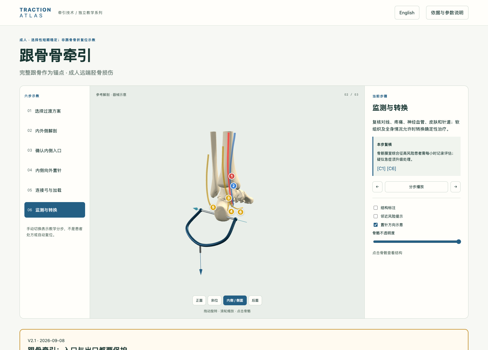
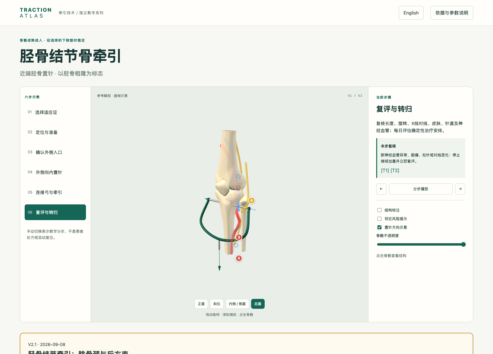
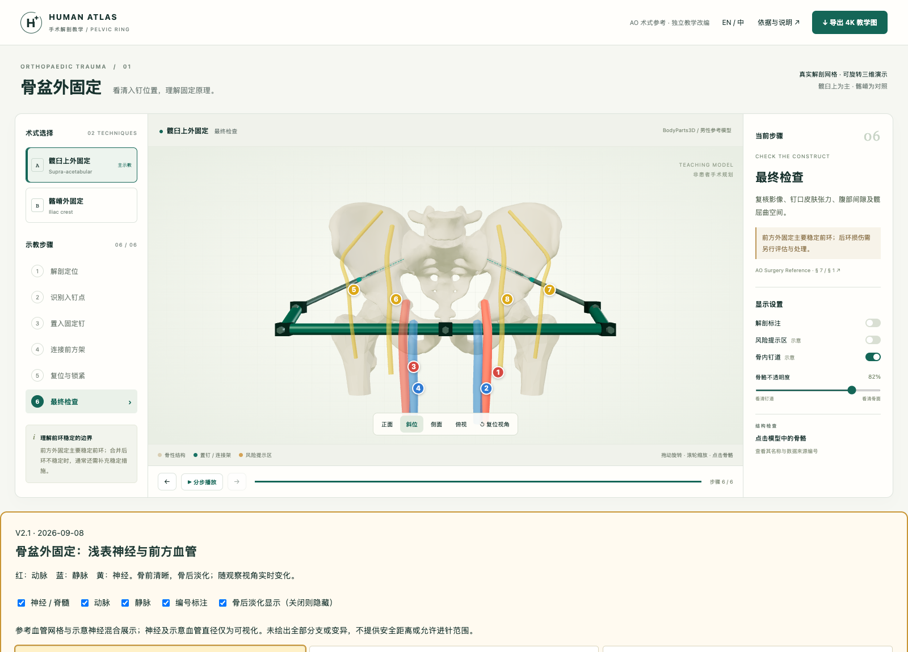
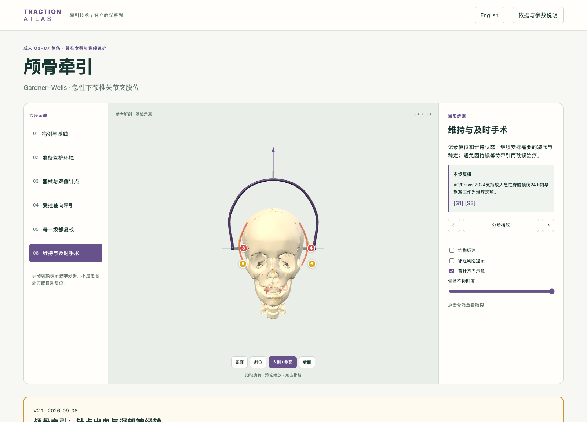

1. 跟骨牵引
打开交互网页内侧辨认胫后神经血管束与跟支；外侧出口仍可能损伤腓肠神经。不能只强调“内向外”而忽略两侧保护。
V2.1 · 未作患者级安全通道验证四项独立更新 · 中英神经血管说明 · 可切换图层 · 高清导出
红：动脉 蓝：静脉 黄：神经。参考血管网格与示意神经分开标注；原版保留。

内侧辨认胫后神经血管束与跟支；外侧出口仍可能损伤腓肠神经。不能只强调“内向外”而忽略两侧保护。
V2.1 · 未作患者级安全通道验证
腓总神经绕腓骨颈走行；胫神经及腘动静脉位于后方。避免将骨后空间误认为空白区，入口、方向、出口需一起核对。
V2.1 · 未作患者级安全通道验证
髋臼上与髂嵴入钉均需关注股外侧皮神经。股神经与股血管在更内侧，是理解错误内偏或深部操作的邻近关系，不能将其与浅表神经视为相同风险。
V2.1 · 未作患者级安全通道验证
针点需避开浅表血管；颈部的椎动脉和脊髓用于说明过度牵引及损伤监测的重要性，不表示颅骨针应接近这些深部结构。
V2.1 · 未作患者级安全通道验证